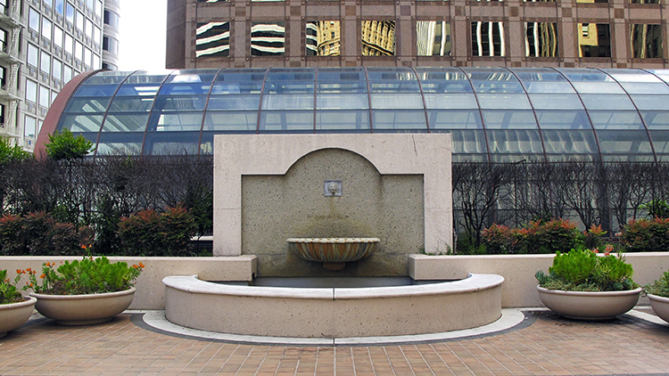

After navigating through the confusingly designed Crocker Galleria, you finally made it to the rooftop terrace. If you listen, you can hear birds chirping and leaves rustling in the wind. Somehow in the shadows of tech giants, you’ve found a moment of nature to connect with, making this space feel like we’ve landed on a different planet. This space is peaceful and shaded from the sun due to surrounding skyscrapers. But something’s off. There’s not a single person here.
You’re at one of San Francisco’s privately-owned public open spaces, also known as a POPOS. Beginning in 1985, the city of San Francisco required all new developments downtown to include space that is open to the public. There are close to 80 POPOS concentrated in the Financial District today. But now that offices are empty and the future of in-person work is uncertain, do POPOS still have a place in the city?
How POPOS Came to Dominate Downtown
After World War II, San Francisco’s skyline changed rapidly. When the war ended in 1945, there were two buildings over 400 feet (about 30 stories tall). By 1970, there were seven and by 1980, there were 24.
Some residents were concerned with the “Manhattanization” of San Francisco and were afraid that the new buildings would block their access to views of the waterfront. Cities around the world were dealing with similar concerns. New York City began offering incentives to provide publicly accessible spaces on private property in 1961. These arcades and plazas were intended to bring in more light and air in otherwise bulky rows of buildings.
Cities around the world were dealing with similar concerns. New York City began offering incentives to provide publicly accessible spaces on private property in 1961. These arcades and plazas were intended to bring in more light and air in otherwise bulky rows of buildings.
Similarly in San Francisco, the city planning department worked with developers to create publicly accessible spaces in new buildings such as the Crown Zellerbach Building and the Transamerica Pyramid.
By 1985, there were 45 POPOS around the city, but some of them had “definite deficiencies,” according to retired urban planner Eva Lieberman. For example, the city's first POPOS at the Crown Zellerbach building had a plaza that wasn't immediately accessible from the street.
To improve the condition of POPOS, the city’s planning department surveyed over 400 downtown workers. Lieberman, who worked on the project, found that people valued three main things: access to the sun, places to sit, and proximity to work. The city used these findings to create a standard set of guidelines, including minimum size requirements, available hours, and seating considerations, as part of the 1985 Downtown Plan.
POPOS Today
We visited five POPOS around the city to see if they live up to promises of the Downtown Plan, and if they worked as spaces that offered a break from the intensity of life in the Financial District.

Finished in 1972, one of San Francisco’s first POPOS is Transamerica Redwood Park, a quiet grove of redwood trees next to the Transamerica Pyramid. Full of mature trees transplanted from Santa Cruz, this park really feels like a quiet break from downtown SF. But, it didn’t have tables and chairs —seating for more than one person is awkward. This POPOS is not always accessible — it's locked on specific days and hours.


Walking down Montgomery Street, you can see glimpses of the rooftop space adjacent to Crocker Galleria; the now two-story building had 10 floors removed to create a green space for shop visitors. However, during multiple attempts to visit, the “Rooftop Garden” was closed, and seemingly never open. The “Rooftop Terrace” was accessible on the other side of the building, but the space was smaller and received less sun because it is in the middle of the block.

This POPOS, first opened in 1988, is a sad sight in downtown SF. Where once there was a classic railroad car in the center of this plaza, which doubled as a small museum, there’s now an empty space with sparse trees and some benches. The largest offense to the public is that every single bench has a heavy steel barrier in front of it. Not only does this brutal state not welcome anyone, but it also creates a physical accessibility issue for potential visitors.
When walking past this POPOS it might be hard to know where you can sit, as this plaza is hugely open, with only a few benches and trees on one end, and a large indiscernible sculpture on the other end. While this POPOS didn’t have anything terrible, it just didn’t provide the same access to nature and private feeling that others did.
The most recent POPOS to be completed, this 4 block long POPOS exists on top of a bus terminal next to Salesforce Tower. While the variety of plants and different spaces to explore, the inherent capitalism of this park cannot be escaped from. From slyly branded Salesforce content, to all of the surrounding buildings who purposefully have their logos at the same level as this park, it's rather difficult to immerse yourself in nature when you are always reminded of work.
The Future of POPOS
Straddling the line between public and private space, POPOS are a strange being. Some like the Redwood Park transport you to a space that feels somewhat like a traditional park, while others like the “rooftop terrace” at Crocker Galleria are so tucked away that it makes you question whether you’re allowed to be there to begin with. Although it can be nice to have your little secret spot in the city, it brings into question who these spaces are for.
Slide to see two different experiences of POPOS
As many of San Francisco’s top employers aren’t going back in person for the time being, it brings up questions about how these spaces could serve a new purpose. With so much space, the possibilities are endless for what POPOS can be used for, and because of their corporate owners, it also brings into question how public these spaces will stay over time.